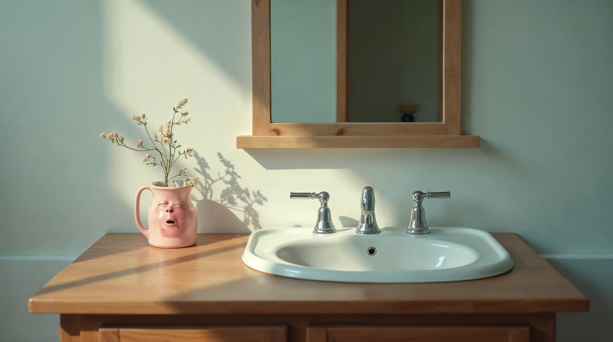
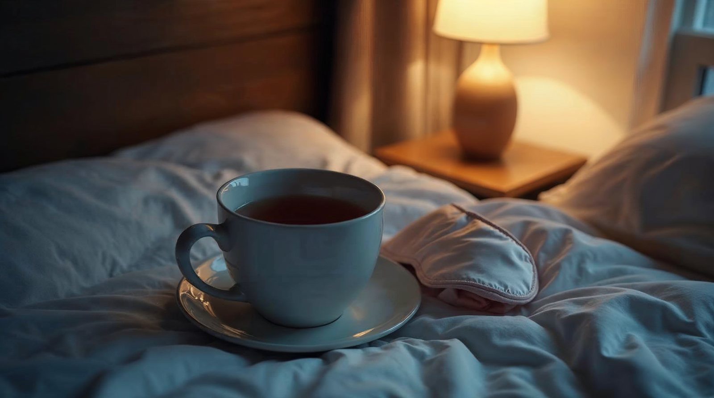
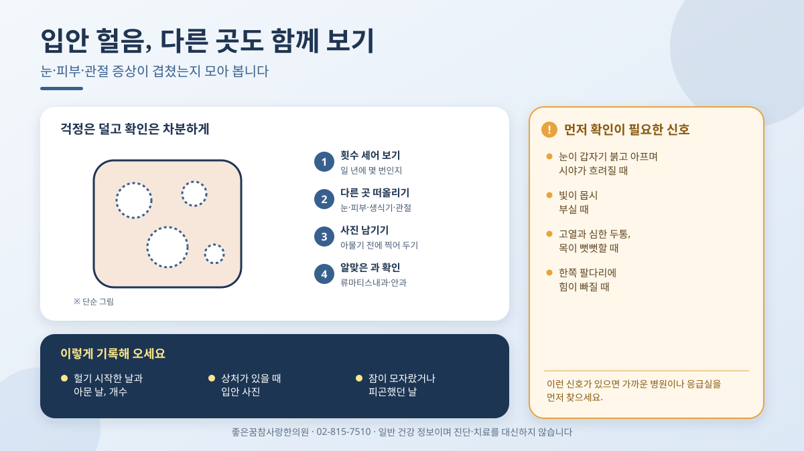

이종호 한의사 감수좋은꿈참사랑한의원 대표원장 (한의사 면허번호 19769)발행 2026-11-26 · 수정 2026-11-27
이 글의 차례
거울 앞에서 입술을 뒤집어 보면 또 하얗게 패인 자리가 두 군데 생겨 있어요. 지난달에도, 그 전달에도 그랬죠. 김치 한 조각만 닿아도 눈물이 찔끔 나고, 말할 때마다 혀끝이 상처에 스쳐요. 그러다 문득 얼마 전 눈이 이유 없이 충혈됐던 일이 떠오르기도 하고요.
인터넷에 '입안이 자주 헐고 눈이 충혈'이라고 검색하면 베체트병이라는 이름이 나와요. 처음 듣는 병명에 마음이 덜컥 내려앉으시죠. 진료실에서도 이런 걱정을 안고 오시는 분을 종종 뵈어요.
먼저 말씀드리고 싶은 게 있어요. 입안이 자주 허는 분 대부분은 흔한 재발성 구내염이에요. 잠이 부족하거나 피곤이 쌓이거나 입안을 깨문 뒤에 생기는 경우가 많거든요.
그러니까 사실은 '입안이 자주 헌다'는 것과 '베체트병'은 다른 얘기예요. 다만 입안 헐음과 함께 다른 곳의 증상이 겹친다면, 한 번쯤 차분히 확인해 보시는 게 마음도 편하고 몸에도 좋아요.
이 글에서는 베체트병이 어떤 병인지, 흔한 구내염과 어떤 점이 다른지, 어디에서 확인하고 한의원에서는 무엇을 함께 살필 수 있는지 정리했어요. 걱정을 키우기보다 무엇을 보고 누구에게 물어야 하는지 알아 두시는 데 도움이 되면 좋겠어요.
베체트병은 어떤 병인가요?
베체트병은 혈관에 염증이 생기는 병으로, 몸의 여러 곳에 증상이 번갈아 나타날 수 있습니다. 가장 흔하고 가장 먼저 나타나는 증상이 입안 헐음입니다. 여기에 생식기 궤양, 눈의 염증, 피부 증상, 관절 통증 등이 시기를 달리해 더해지기도 합니다.
아직 원인이 다 밝혀지지 않았지만, 타고난 체질적 경향에 감염이나 환경 요인이 겹쳐 면역이 과하게 반응하는 것으로 보는 시각이 많습니다. 우리나라를 포함해 옛 실크로드를 따라 있는 나라들에서 상대적으로 많이 보고됩니다.
중요한 것은 증상이 한꺼번에 오지 않는 경우가 많다는 점입니다. 입안은 지금 헐어 있고, 눈은 몇 달 전에 충혈됐고, 피부 뾰루지는 작년에 있었던 식입니다. 그래서 하나하나는 대수롭지 않게 넘기기 쉬워서, 흩어진 기억을 모아 보는 일이 필요합니다.
흔한 구내염과는 무엇이 다를까요?
흔한 재발성 구내염은 피곤하거나 잠이 부족할 때, 입안을 깨물었을 때, 생리 전후에 생기고 보통 1~2주 안에 아뭅니다. 입안 말고 다른 곳에는 증상이 없는 것이 보통입니다.
베체트병의 입안 헐음도 모양은 비슷해서 구별이 쉽지 않습니다. 다만 일 년에 세 번 이상 되풀이되고, 여러 개가 한꺼번에 생기거나 크기가 크고, 입안 말고도 다음 증상이 함께 있었다면 확인해 볼 이유가 됩니다.
- 생식기나 그 주변에 아픈 궤양이 생겼다가 흉을 남기고 아문 적이 있음
- 눈이 충혈되고 아프거나 시야가 뿌옇고 날파리가 떠다니는 느낌이 있음
- 정강이에 붉고 누르면 아픈 멍울이 생기거나 여드름 같은 뾰루지가 자주 남
- 주사나 채혈한 자리에 하루 이틀 뒤 고름 같은 뾰루지가 생긴 적이 있음
- 무릎이나 발목 같은 관절이 이유 없이 붓고 아픔
이 밖에도 입안이 자주 허는 이유는 여럿입니다. 헤르페스 같은 바이러스 감염, 철분이나 비타민 B12 부족, 장에 염증이 있는 질환, 입에 맞지 않는 치약이나 보철물도 원인이 될 수 있어서 한 가지로 단정하지 않고 나눠서 봅니다.
왜 입안 헐음이 자꾸 되풀이될까요
입안 점막은 몸에서 가장 빨리 새로 바뀌는 조직 가운데 하나입니다. 그만큼 잠, 영양, 피로, 호르몬 같은 몸 전체의 상태가 고스란히 드러나는 자리이기도 합니다. 컨디션이 떨어지면 점막이 다시 채워지는 속도가 따라가지 못해 상처가 쉽게 생깁니다.
여기에 면역이 예민하게 반응하는 체질이 겹치면, 같은 자극에도 더 크게 헐고 더 자주 되풀이됩니다. 베체트병은 이 반응이 입안을 넘어 눈, 피부, 혈관까지 번지는 경우라고 이해하시면 쉽습니다.
한의학에서는 입안이 자주 헐고 입이 쓰며 잠이 얕은 모습을 위와 심의 열로, 피로하면 더 자주 생기고 상처가 오래가는 모습을 기운이 처진 상태로 나눠 보기도 합니다. 이런 분류는 진단명을 대신하는 것이 아니라, 생활에서 무엇을 먼저 조절할지 정하는 참고로 씁니다.

피부와 관절, 눈에는 어떤 모습으로 나타나나요
피부에서는 정강이나 종아리에 붉고 누르면 아픈 멍울이 생겼다가 멍든 것처럼 색이 바뀌며 사라지는 모습이 흔합니다. 등이나 얼굴에 여드름처럼 보이는 뾰루지가 자주 나기도 해서, 사춘기가 한참 지났는데도 여드름이 이어진다고 말씀하시는 분도 계십니다.
관절은 무릎, 발목, 손목처럼 큰 관절 한두 곳이 붓고 아팠다가 몇 주 뒤 가라앉는 식으로 오는 경우가 많습니다. 류마티스 관절염처럼 손가락 마디가 대칭으로 굳어 가는 모습과는 조금 다릅니다.
눈은 충혈, 통증, 눈부심, 시야가 뿌연 느낌, 눈앞에 날파리가 떠다니는 느낌으로 나타날 수 있습니다. 단순한 결막염이나 피로한 눈과 비슷해 보여서 넘기기 쉬운데, 입안 헐음과 함께 이런 일이 있었다면 안과에서 한 번 확인받아 두시는 것이 좋습니다.
이 증상들은 같은 시기에 오지 않는 경우가 많습니다. 그래서 '그때 그 일도 혹시?' 하고 떠오르는 기억이 있다면 날짜와 함께 적어 두세요. 그 조각들이 모여야 전체 그림이 보입니다.

잠과 피로가 입안에 먼저 드러납니다
진료실에서 입안 헐음이 되풀이되는 분들의 하루를 들어 보면, 잠드는 시각이 들쭉날쭉하거나 끼니를 자주 거르는 경우가 많습니다. 몸이 쉬는 시간이 부족하면 점막이 회복할 틈이 줄어들어, 같은 자극에도 더 쉽게 헐 수 있습니다.
베체트병으로 진단받은 분도 마찬가지입니다. 약이 치료의 중심이지만, 잠이 무너지고 피로가 쌓인 주에 증상이 잦아졌다고 말씀하시는 분이 많습니다. 생활을 고르게 하는 일은 약과 함께 갈 수 있는 든든한 바탕이 됩니다.
특히 시험, 마감, 야간 근무처럼 잠이 밀리는 시기를 미리 알고 있다면 그 전후로 일정을 조금 덜어 두세요. 늦게 잔 다음 날 낮잠을 길게 자기보다, 다음 날 밤 조금 일찍 눕는 편이 리듬을 되찾는 데 수월합니다.
어디에서 확인하나요
베체트병은 혈액 검사 하나로 딱 정해지는 병이 아니라, 증상의 모양과 경과를 모아 판단합니다. 그래서 진단은 류마티스내과에서 맡는 경우가 많고, 눈 증상이 있다면 안과, 피부 증상이 두드러지면 피부과에서 함께 봅니다.
진료를 받으러 가실 때는 지난 몇 달 동안의 증상을 날짜별로 정리해 가시면 큰 도움이 됩니다. 입안, 생식기, 눈, 피부 사진이 있다면 같이 보여 주세요. 아물고 난 뒤에 가면 확인할 것이 남지 않으니, 증상이 있을 때 사진을 남겨 두시는 것이 좋습니다.
진단을 받은 뒤에는 류마티스내과에서 처방하는 약이 치료의 중심이 됩니다. 증상이 가라앉았다고 해서 약을 혼자 줄이거나 멈추지 마시고, 눈 정기 검진도 꾸준히 챙겨 주세요.
한의원 진료 때 미리 알려 주실 것
베체트병이 있거나 의심되는 분은 바늘에 찔린 자리에 뾰루지가 생기는 반응이 나타나기도 합니다. 그래서 한의원에서 침이나 약침 진료를 받으실 때는 진단 여부와 이런 반응이 있었는지를 처음에 꼭 알려 주세요.
이 정보를 바탕으로 침 진료를 할지, 한다면 어떻게 조심할지, 다른 방법을 먼저 쓸지를 함께 정합니다. 드시는 약과 최근 검사 결과도 같이 확인합니다.
먼저 이렇게 여쭙니다
처음 오시면 저는 대략 이런 순서로 여쭙니다. 미리 생각해 오시면 이야기가 훨씬 수월해집니다.
- 입안이 헐기 시작한 지 얼마나 되었고, 일 년에 몇 번쯤 생기나요?
- 한 번 생기면 몇 개가, 얼마 동안 가나요?
- 생식기 궤양, 눈 충혈, 피부 뾰루지, 관절 통증이 있었던 적이 있나요?
- 잠, 피로, 생리 주기와 입안 헐음이 겹치는 때가 있나요?
- 소화와 대변은 어떤가요? 배가 자주 아프거나 설사가 이어진 적이 있나요?
- 지금 드시는 약이나 영양제가 있나요?
정확한 횟수를 기억하지 못하셔도 괜찮습니다. '지난 석 달 동안 서너 번' 정도로만 말씀해 주셔도 충분합니다. 가족 가운데 비슷한 증상이 있는 분이 있는지도 함께 여쭙니다.
일상에서 먼저 해 볼 수 있는 것
입안 헐음이 되풀이될 때는 상처를 덜 자극하고, 점막이 회복할 여유를 주는 쪽으로 생활을 맞춰 봅니다. 한꺼번에 모두 바꾸기보다 나에게 맞는 것 한두 가지부터 시작해 보세요.
- 상처가 있을 때는 맵고 짜고 뜨거운 음식, 신 과일을 잠시 줄이기
- 부드러운 칫솔로 양치하고, 거품이 많은 치약이 불편하면 바꿔 보기
- 잠드는 시각을 일정하게 맞추고 수면 시간을 확보하기
- 끼니를 거르지 않고 단백질과 채소를 고르게 먹기
- 물을 조금씩 자주 마셔 입안이 마르지 않게 하기
- 피로가 쌓이는 주에는 일정을 조금 덜어 내기
상처가 아플 때는 미지근한 물로 자주 헹구는 것만으로도 한결 편할 수 있습니다. 입안에 바르는 약이나 가글은 약국이나 치과, 담당 선생님과 상의해 고르시면 됩니다.
입안 헐음이 생긴 날과 그 전 며칠의 생활을 함께 떠올려 보시면, 잠이 모자랐거나 무리했던 때와 겹치는 경우가 많습니다. 나만의 계기를 찾아 두면 그 시기에 미리 쉬어 갈 수 있습니다.
담배를 끊은 직후나 새 치약, 새 보철물을 쓰기 시작한 뒤에 입안이 자주 헐었다면 그 변화도 함께 적어 두세요. 의외로 이런 작은 변화가 실마리가 되기도 합니다. 치아가 날카롭게 깨진 자리나 맞지 않는 교정 장치가 같은 곳을 계속 긁는다면 치과에서 먼저 다듬어 받는 것이 좋습니다.
술은 상처가 있을 때 따갑게 할 뿐 아니라 잠을 얕게 만들어 회복을 더디게 할 수 있습니다. 입안이 헐어 있는 동안만이라도 잠시 쉬어 보시길 권합니다.
한의원에서 함께 살필 수 있는 경우
- 입안이 자주 헐고 잠이 얕으며 쉽게 피로한 경우
- 입이 쓰고 마르며 속이 쓰리거나 더부룩한 경우
- 상처가 생기면 오래가고 기운이 처지는 경우
- 류마티스내과 치료를 받으면서 피로나 소화 불편이 이어지는 경우
좋은꿈참사랑한의원에 오시면 모든 분의 맥을 먼저 짚고, 아래 '먼저 확인이 필요한' 신호가 없는지 살핍니다. 그다음 혀와 입안을 살피며, 잠과 소화, 대소변, 생리 주기를 여쭙습니다. 다른 과 확인이 먼저 필요해 보이면 그 방향을 먼저 안내합니다.
진찰한 내용을 바탕으로 생활에서 바꿔 볼 것 하나와 함께 한약 상담, 침 진료 가운데 지금 상태에 맞는 것을 정합니다. 한약을 상의할 때는 드시는 약을 모두 확인하고 신중하게 정합니다. 임신 중이거나 임신을 계획하신다면 먼저 알려 주시고 산부인과와도 상의해 주세요.
이렇게 기록해 오시면 상담이 쉬워집니다
입안 헐음은 아물고 나면 모양을 다시 볼 수 없어서, 기록과 사진이 가장 좋은 자료가 됩니다. 한두 달만 간단히 적어 보세요.
- 입안이 헐기 시작한 날과 아문 날, 개수와 대략의 크기
- 상처가 있을 때 찍은 입안 사진
- 눈, 피부, 생식기, 관절에 생긴 증상과 날짜
- 잠든 시각과 깬 시각, 피곤했던 날 표시
- 생리 시작일
이 기록은 류마티스내과나 안과 진료 때 보여 드려도 좋은 자료가 됩니다. 흩어져 있던 증상이 한 장에 모이면, 의사도 본인도 흐름을 훨씬 쉽게 볼 수 있습니다.
걱정은 덜고, 확인은 차분하게
입안이 자주 허는 것만으로 베체트병을 단정할 수는 없어요. 반대로 여러 곳의 증상이 겹치는데 그냥 넘기면 눈처럼 중요한 자리를 놓칠 수 있고요. 그래서 걱정은 덜고, 확인은 차분하게 하시는 게 좋아요. 겁부터 내실 일은 아니에요.
확인이 필요한 곳은 맞는 과로 안내해 드리고, 잠과 피로, 소화를 살피는 건 제가 맡을게요. 대신 하나만 부탁드려요. 이번 주에는 입안이 헐 때마다 사진 한 장과 날짜 한 줄만 남겨 주세요. 그 기록이 다음 진료에서 제일 든든한 길잡이가 되거든요. 딴 건 하시던 대로 편하게 지내셔도 돼요.
궁금한 건 진료실에서 그냥 편하게 물어보세요.
이런 증상은 먼저 확인이 필요합니다
- 눈이 갑자기 붉고 아프면서 시야가 뿌옇게 흐려지거나 빛이 몹시 부신 경우
- 고열과 함께 심한 두통, 목이 뻣뻣함, 한쪽 팔다리 힘 빠짐이 있는 경우
이런 신호가 있으면 한의원보다 가까운 병원이나 응급실을 먼저 찾으세요.
함께 읽으면 좋은 글
- 혀와 입안이 따갑고 화끈거리는 구강작열감은 어떻게 살피나요?
- 물을 마셔도 입이 바싹 마르는 구강건조증은 어떻게 살피나요?
- 류마티스 등 자가면역질환으로 치료 중일 때 근육통 한방 진료를 같이 받아도 되나요?
- 햇빛이나 모니터 빛에 눈이 유난히 부시고 시린 눈부심(광과민)은 어떻게 살피나요?
- 충분히 쉬어도 몸이 늘 피곤한 만성피로는 어떤 점을 살펴보나요?

여쭙는 것
- 입안이 헐기 시작한 지 얼마나 되었고, 일 년에 몇 번쯤 생기나요?
- 한 번 생기면 몇 개가, 얼마 동안 가나요?
- 생식기 궤양, 눈 충혈, 피부 뾰루지, 관절 통증이 있었던 적이 있나요?
생활에서 해 볼 것
- 상처가 있을 때는 맵고 짜고 뜨거운 음식, 신 과일을 잠시 줄이기
- 부드러운 칫솔로 양치하고, 거품이 많은 치약이 불편하면 바꿔 보기
- 잠드는 시각을 일정하게 맞추고 수면 시간을 확보하기
한의원에서 함께 살필 것
- 입안이 자주 헐고 잠이 얕으며 쉽게 피로한 경우
- 입이 쓰고 마르며 속이 쓰리거나 더부룩한 경우
- 상처가 생기면 오래가고 기운이 처지는 경우
먼저 확인이 필요한 신호
- 눈이 갑자기 붉고 아프면서 시야가 뿌옇게 흐려지거나 빛이 몹시 부신 경우
- 고열과 함께 심한 두통, 목이 뻣뻣함, 한쪽 팔다리 힘 빠짐이 있는 경우
한눈에 보는 표
| 구분 | 핵심 |
|---|---|
| 여쭙는 것 | 입안이 헐기 시작한 지 얼마나 되었고, 일 년에 몇 번쯤 생기나요? 한 번 생기면 몇 개가, 얼마 동안 가나요? |
| 생활에서 해 볼 것 | 상처가 있을 때는 맵고 짜고 뜨거운 음식, 신 과일을 잠시 줄이기 부드러운 칫솔로 양치하고, 거품이 많은 치약이 불편하면 바꿔 보기 |
| 한의원에서 함께 살필 것 | 입안이 자주 헐고 잠이 얕으며 쉽게 피로한 경우 입이 쓰고 마르며 속이 쓰리거나 더부룩한 경우 |
| 먼저 확인이 필요한 신호 | 눈이 갑자기 붉고 아프면서 시야가 뿌옇게 흐려지거나 빛이 몹시 부신 경우 고열과 함께 심한 두통, 목이 뻣뻣함, 한쪽 팔다리 힘 빠짐이 있는 경우 |
자주 묻는 질문
입안이 자주 헐면 베체트병인가요?
입안이 자주 허는 분 대부분은 흔한 재발성 구내염입니다. 다만 일 년에 여러 번 되풀이되면서 눈, 피부, 생식기, 관절 증상이 함께 있었다면 류마티스내과에서 확인해 보시길 권합니다.
베체트병이 있는데 침을 맞아도 되나요?
바늘 자리에 뾰루지가 생기는 반응이 나타날 수 있어서 처음에 꼭 알려 주세요. 그 정보를 바탕으로 침 진료 여부와 방법을 함께 정하고, 필요하면 다른 방법을 먼저 씁니다.
베체트병 약을 먹고 있는데 한약을 함께 먹어도 되나요?
드시는 약과 최근 검사 결과를 모두 확인하고 신중하게 정합니다. 필요하면 류마티스내과 선생님과 상의하시도록 안내하고, 처방받은 약은 상의 없이 멈추지 않습니다.
입안 헐음이 있을 때 피해야 할 음식이 있나요?
상처가 있는 동안에는 맵고 짜고 뜨거운 음식, 신 과일, 딱딱한 과자처럼 상처를 자극하는 음식을 잠시 줄이시면 편합니다. 아문 뒤에는 끼니를 고르게 드시는 것이 더 중요합니다.
좋은꿈참사랑한의원은 재진 때 지난번 이야기부터 이어서 여쭙니다. 진료시간과 예약은 오시는 길에서 확인하세요.
어디서 상담받을 수 있나요?
좋은꿈참사랑한의원은 서울 동작구 만양로2길 2 신성빌딩 3층·5층(서울 동작구 상도동, 7호선 상도역 3번 출구 근처)에 있습니다. 한의사 3명(이종호 대표원장, 조영기 수석진료원장, 정원영 진료원장)이 진료합니다. 진료시간은 평일 09:30~20:00(점심 13:00~14:00), 토·일·공휴일 09:30~15:00이며, 방문 전 전화로 확인을 권합니다. 예약은 네이버 예약, 카카오톡 상담, 전화 02-815-7510로 받습니다.
이 글은 일반적인 건강 정보이며 개인의 진단이나 치료를 대신하지 않습니다. 증상이 있거나 복용 중인 약이 있다면 진료를 통해 확인하세요. 치료 효과는 개인마다 다를 수 있습니다.
작성 기준: 일반적으로 알려져 있는 건강 정보를 참고해 정리했습니다(대표원장 감수). 증상 기록은 1~2주 동안 하루 1회, 비슷한 시간에 적어 오시면 지난 상태와 비교하기 쉽습니다.